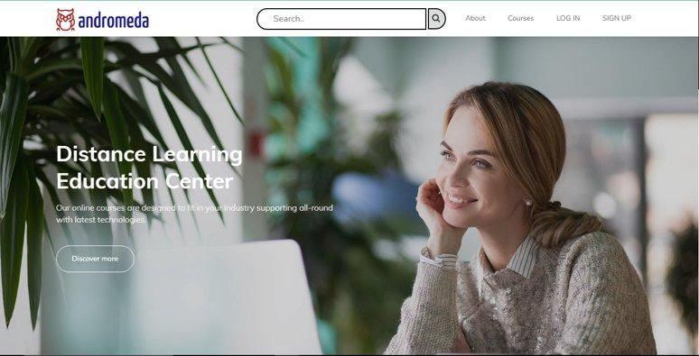

Akash T Projects
Core Module 1
Documentation and Rewiring of a Simple Network
The "Documentation and Rewiring of a Simple Network" project focused on replacing the existing network cables with the same type in NSTI CALICUT while meticulously documenting the positions of network nodes and cables. This report details the objectives, methodology, materials used, challenges faced, and outcomes of the project.Problem
- Deteriorating performance and reliability in the existing network infrastructure.
- Outdated and damaged network cables causing disruptions.
- Impaired operational efficiency and increased risk of unexpected downtime.
- Lack of comprehensive documentation on network layout and cable connections.
Solution
Comprehensive Cable Replacement:
- Systematic replacement of damaged or outdated network cables.
- Thorough assessment to identify cables in need of replacement.
- Carried out by a dedicated Cable Replacement Technician to ensure secure and functional connections.
Precise Documentation:
- Meticulous documentation of network nodes and cables.
- Creation of detailed network diagrams.
- Labeling of cables for easy identification.
- Recording the routing of each cable.
- Organized and maintained documentation for future reference and troubleshooting.
Minimized Downtime:
- Scheduled work during off-peak hours to minimize disruptions.
- Clear communication with end-users about planned network downtime.
- Alternative connectivity options provided during maintenance.
Testing and Verification:
- Thorough testing of each connection after cable replacement.
- Confirmation of network connectivity and speed.
- Prompt addressing of any issues or connectivity problems during testing.
Regular Maintenance and Updates:
- Implementation of a regular network maintenance schedule.
- Proactive identification and addressing of cable issues.
- Prevention of future network disruptions for ongoing reliability.
Images

Core Module 2 & 3
Andromeda(educational website)
Our educational website revolutionizes learning by offering a diverse range of courses and resources for individuals of all backgrounds. Upon creating an account, users define their interests, enabling our platform to curate a personalized learning journey. Progress tracking tools provide valuable insights, fostering motivation and improvement. We believe in accessible education that empowers individuals to create positive change. Join us on this transformative learning adventure at Andromeda.Problem
-
Educational Landscape Challenges:
- Traditional learning approaches lack adaptability to diverse needs.
- Limited engagement and progress due to generic learning experiences.
-
Personalization Gap:
- Existing platforms fail to offer personalized learning experiences.
- Inability to cater to the unique preferences of learners from diverse backgrounds.
-
Progress Tracking Deficiency:
- Lack of effective tools for tracking learning progress.
- Hindrance to user motivation and improvement.
Solution
-
Personalisation:
- Users define their interests during account creation for a personalized learning journey.
-
Progress Tracking Tools Implementation:
- Integration of progress tracking tools for valuable insights.
- Fostering motivation and enabling users to monitor and enhance their educational growth.
-
Mission for Empowerment:
- Core belief in accessible education as a catalyst for empowerment.
- Aiming to facilitate positive change through personalized learning experiences.
-
Invitation to Transformative Learning:
- Andromeda invites learners to embark on a transformative educational adventure.
- Education becomes a dynamic, tailored experience, contributing to continuous improvement and knowledge advancement across diverse communities.
Images
Flow Chart:
Screenshots:
Project Code
https://github.com/akzgit/CM2-Andromeda.gitCore Module 4
DevExchange :online community platform
In today's dynamic tech landscape, knowledge sharing and collaboration are vital. This project aims to build a vibrant online community platform using Django, where technology enthusiasts can connect, discuss programming and tech-related topics, and receive AI-powered doubt clearance assistance. The platform, named "DevExchange," fosters an environment of learning, engagement, and innovation.Problem
-
Fragmented Learning Landscape:
- Lack of a unified platform for collaborative learning and AI-driven doubt resolution.
- Current solutions are fragmented, resulting in a disjointed user experience.
-
Contextual Response Deficiency:
- Existing platforms struggle to provide contextually relevant responses to user queries.
-
Limited Community Engagement:
- Inability to foster vibrant interactions within the tech community.
- Disconnect between human-driven and AI-driven elements.
-
Gap in Knowledge Sharing:
- Users are unable to fully benefit from both human experience and AI efficiency.
-
Inefficient Collaborative Learning:
- Current platforms hinder collaborative learning due to their limitations.
-
Need for Integrated Solution:
- Pressing need for a purpose-built platform seamlessly combining community collaboration and AI assistance.
-
Redefining Learning Experience:
- The solution aims to overcome limitations and redefine how technology enthusiasts engage, learn, and contribute.
-
Cohesive Digital Space:
- Create a cohesive digital space addressing challenges in existing learning environments.
Solution
-
Unified Platform Development:
- Develop a unified platform using Django and integrate with OpenAI for AI-driven solutions.
- Utilize Django as the foundation and integrate with the OpenAI API.
-
Community-Driven Interaction:
- Foster vibrant, collaborative interactions within the tech community.
-
Personalized AI Assistance:
- Implement AI systems for personalized responses to user queries, ensuring efficiency.
-
Collaborative Learning Features:
- Include features that promote collaborative learning, such as group projects and knowledge sharing.
-
Continuous Learning for AI:
- Ensure the AI component evolves through continuous learning to adapt to changing technology trends.
-
Harmonious Integration:
- Integrate community-driven and AI-driven elements harmoniously for an enhanced user experience.
-
User-Friendly Design:
- Create an intuitive and user-friendly interface to facilitate easy navigation and engagement.
Images
Flow Chart:
Screenshots:

Project Code
https://github.com/akzgit/DevExchange.gitCore Module 5
Image Classification using Convolutional Neural Networks
This project focuses on creating an image classification system to differentiate between images of cats and dogs, employing Convolutional Neural Networks (CNNs). The initiative involves data collection and preprocessing, designing a tailored CNN architecture, and training and evaluating the model. The project's significance lies in its potential applications, from lost pet identification to wildlife monitoring and security. By showcasing the practicality of CNNs in solving real-world image classification challenges, this project serves as a compelling example of the power of deep learning in computer vision.Problem
-
Introduction:
- CNNs have revolutionized computer vision in tasks like image classification, object detection, and image recognition.
-
Hierarchical Feature Learning:
- CNNs can learn hierarchical features directly from image data, making them powerful for various applications.
-
Project Focus:
- The project centers on utilizing CNNs for image classification tasks.
- The primary focus is on exploring and demonstrating CNNs' capabilities and adaptability.
-
Illustrative Example:
- The common example of distinguishing between cats and dogs is used for illustration.
-
Versatility of CNNs:
- Emphasis on showcasing the versatility of CNNs beyond specific classification tasks.
- Highlighting their pivotal role in computer vision.
-
Applications Across Domains:
- CNNs have applications ranging from medical image analysis to autonomous vehicles.
-
Project Objective:
- The project aims to shed light on the capabilities and opportunities provided by CNNs.
- Specifically, addressing their role in solving complex real-world problems reliant on image data.
Solution
<Objective:
Create an accurate image classification system using Convolutional Neural Networks (CNNs).
Target Classification:
Distinguish between cat and dog images.
Key Steps:
- Collect diverse data for training the model.
- Design a specialized CNN model tailored for image classification.
Training Strategy:
Implement training with data augmentation techniques to enhance model robustness.
Deployment:
- Deploy the trained model through a user-friendly interface.
- Enable real-time image classification.
Emphasis on CNN Versatility:
Showcase the versatility of CNNs beyond the specific task of cat vs. dog classification.
Real-World Applications:
Highlight real-world applications, such as pet care and wildlife monitoring.
Broader Computer Vision Foundation:
Provide a foundation for broader computer vision applications beyond pet classification.
Showcasing Deep Learning Power:
Demonstrate the power of deep learning in addressing image classification challenges.
Project Aim:
- Showcase how deep learning can effectively solve image classification challenges.
- Promote understanding through interactive experiences.